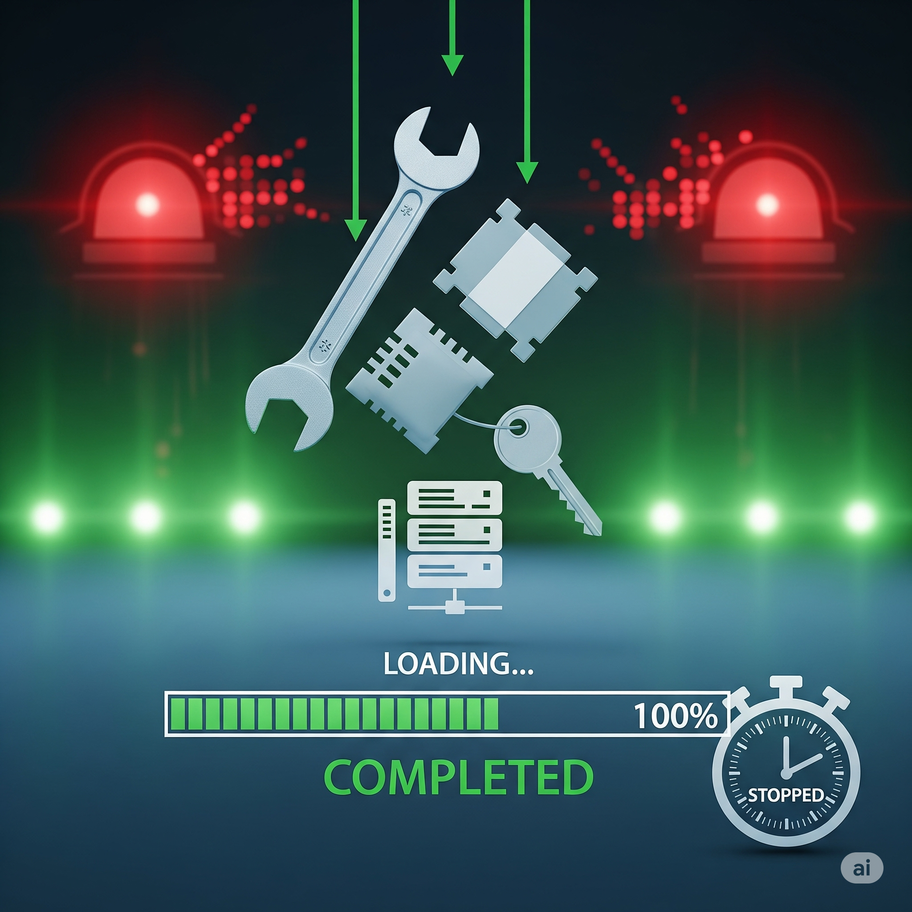

Hoş geldiniz, **ÇOLHAK Teknoloji**'nin **Kıdemli SOC Analisti**! SOC ekibinizde kritik bir rolünüz var. Şirketinizin web uygulamasına yönelik, henüz yamalanmamış bir **zero-day açığın aktif olarak sömürüldüğünü** fark ettiniz. Saldırganlar, sistemlere sızarak hassas verilere ulaşmaya çalışıyor. Göreviniz: Bu saldırıyı durdurmak, hasarı kontrol altına almak, vendor'dan acil mitigasyon talep etmek ve sistemleri izole etme kararlarıyla zamana karşı bir yarış başlatmak!
Simülasyon Rolleri
Sizin Rolünüz: Kıdemli SOC Analisti
Aktif saldırıyı tespit eden ve ilk müdahaleyi yapan ekibin liderisin. Teknik analizler, tehdit avcılığı ve mitigasyon adımlarında aktif rol alıyorsun. Seçimlerin sonucu doğrudan etkileyecek.
CISO Anıl Yılmaz Güvenlikten sorumlu, hızlı aksiyon bekliyor.
CTO Sadi Orçun Teknik altyapı ve uygulama sorumlusu, vendor iletişimi ondan geçiyor.
CEO Sultan Göze İtibar ve iş sürekliliği öncelikli.
Vendor Temsilcisi (Uygulama Geliştiricisi) Zero-day açığı yamalamakla yükümlü, yavaş kalabilir.
Temel Metrikler
Uygulama Güvenlik Durumu Uygulamanın zafiyetlere karşı ne kadar savunmasız olduğu. (Başlangıç: Kritik)
Potansiyel Finansal Zarar Saldırının maliyeti. (Başlangıç: ₺0)
Kriz Süresi Krizin kontrol altına alınma süresi. (Başlangıç: 0 Saat)
Kullanıcı Güveni Kullanıcıların uygulamaya olan inancı. (Başlangıç: 100)
Karar Etkileri
Stratejik Değerlendirme
Uygulama Güvenliği
Kritik
Saldırgan Erişimi
Sınırlı
Finansal Zarar
₺0
Kriz Süresi
0 Saat
Kullanıcı Güveni
100
Aşama 1: İlk Tespit ve Şok
An 0:00 - Zero-Day Exploit Alarmı!
Gece vardiyası sırasında, kritik web uygulamanızdaki WAF (Web Application Firewall) loglarında olağan dışı bir aktivite tespit ettiniz. Normalde engellenen bazı isteklerin bu kez bypass edildiğini ve uygulamanın beklenmedik şekillerde yanıt verdiğini görüyorsunuz. İlk analizler, henüz bilinmeyen bir zafiyetin aktif olarak sömürüldüğünü gösteriyor: Bir **zero-day saldırısı**! Saldırganlar, uygulamanın kullanıcı veritabanına erişmeye çalışıyor.
CISO Anıl Yılmaz'tan acil bir çağrı alıyorsunuz: *"Bu ne demek oluyor? Nasıl olur da farkında olmadığımız bir zafiyet sömürülür? Derhal durdurmalıyız! Ne yapıyoruz?!"*
Kıdemli SOC Analisti olarak ilk acil müdahalen ne olacak?
Öğrenme Notu: Zero-day saldırılarında ilk tepki kritik öneme sahiptir. Hızlı izolasyon, hasarı sınırlar; detaylı gözlem ise istihbarat sağlar ancak risk taşır.
Aşama 2A: Vendor İletişimi - İlk Yanıt ve Bilgilendirme
An 1:30 - Vendor'dan Gelen İlk Yanıt
Zero-day açığını tespit ettikten hemen sonra, uygulamanın geliştiricisi olan vendor firmayla acil bir toplantı ayarladınız. Durumu tüm detaylarıyla aktardınız. Vendor ekibi şaşkın ve bu zafiyetin kendi bilgilerinde olmadığını doğruladı. Bu, gerçekten bir **zero-day** olduğunu kanıtlıyor. Vendor, hızlıca bir yama geliştirmek için tüm ekibini seferber edeceğini ancak bunun **tahmini 8-12 saat** sürebileceğini belirtti.
Bu bilgiyle birlikte, kriz ekibindeki yöneticilere nasıl bir bildirimde bulunacaksın?
Öğrenme Notu: Zero-day'lerde vendor yanıtı ve yama süreci hayati öneme sahiptir. Bu süreçte boş durmak yerine, geçici çözümler için baskı yapmak kriz yönetiminde proaktif bir yaklaşım gösterir.
Aşama 2B: Geçici Çözüm Stratejileri
An 2:30 - Acil Geçici Mitigasyon Arayışı
Vendor'dan beklenen tam yama için zaman daralırken, CISO Anıl Yılmaz ve CTO Sadi Orçun, sizinle birlikte acil bir toplantı yapıyor. Uygulamanın riskli durumda kalmasını istemiyorlar. "Uygulamanın aktif kalması bizim için hayati. Vendor'dan gelen yama gelene kadar ne yapabiliriz?" diye soruyorlar. Önünüzde üç olası geçici mitigasyon stratejisi var:
1. **WAF Kuralları:** Saldırganın exploit paternlerine dayalı olarak Web Application Firewall (WAF) üzerine özel kurallar eklemek. Bu, saldırıları belirli imzalar üzerinden engellemeyi sağlar ancak bilinmeyen varyasyonlara karşı savunmasız kalabilir.
2. **Özelliği Devre Dışı Bırakma:** Zero-day açığını barındıran spesifik uygulama özelliğini geçici olarak devre dışı bırakmak. Bu, açığı kesin olarak kapatır ancak uygulamanın bir bölümünü kullanılamaz hale getirir.
3. **Uygulamayı Çevrimdışı Alma:** Uygulamayı tamamen çevrimdışı bırakmak. En güvenli yöntemdir ancak iş kesintisine neden olur ve müşteri memnuniyetini olumsuz etkiler.
Mevcut riskler ve iş ihtiyaçları doğrultusunda hangi geçici mitigasyon stratejisini önereceksin?
Öğrenme Notu: Geçici mitigasyonlar, zero-day krizlerinde zaman kazanmak için hayati öneme sahiptir. Her seçeneğin güvenlik, işlevsellik ve kullanıcı deneyimi üzerinde farklı etkileri vardır.
Aşama 3A: Veri İhlali Tespiti ve Hasar Değerlendirmesi
An 3:00 - Kullanıcı Veritabanına Erişim Tespit Edildi!
Geçici mitigasyon adımlarına rağmen, sistem izlemeleriniz devam ederken ürkütücü bir gerçekle yüzleşiyorsunuz: Saldırgan, zero-day açığını kullanarak kullanıcı veritabanına erişim sağlamış! Hassas müşteri bilgileri (e-posta adresleri, şifre hash'leri ve telefon numaraları) sızdırılmaya başlandı. İlk etapta **10.000 kullanıcının verisinin** etkilenmiş olabileceği tahmin ediliyor. CISO, şimdi panik içinde: *"Bu bir veri ihlali! GDPR ve KVKK ihlali demek! Nasıl bir açıklama yapacağız? Finansal etkisi ne olacak?"*
Bu kritik veri ihlali karşısında, hasarı kontrol altına almak ve gelecekteki adımları belirlemek için ne yapacaksın?
Öğrenme Notu: Veri ihlallerinde hızlı ve doğru bilgilendirme, kullanıcı güvenini sürdürmek için önemlidir. Teknik adımlar ve iletişim stratejileri eş zamanlı yürütülmelidir.
Aşama 3B: İç Tehdit Şüphesi ve Kök Neden Analizi
An 4:00 - İç Ağda Şüpheli Hareketlilik!
Veri ihlali sonrası yaptığınız derinlemesine log analizleri ve adli bilişim incelemeleri sırasında şaşırtıcı bir bulguya rastladınız: Saldırganın zero-day açığını sömürmesinin hemen ardından, şirket içi ağdan, yani bir geliştirici iş istasyonundan (dev_workstation_01), dışarıya doğru şüpheli bir bağlantı (anonim proxy sunucusu üzerinden) kurulduğu tespit edildi. Bu bağlantı, sızdırılan verinin bir kopyasının gönderilmesiyle ilişkili olabilir. Bu durum, ya içeriden bir işbirliği ya da başka bir kötü niyetli yazılımın iş istasyonuna bulaşmış olma ihtimalini akla getiriyor.
CTO Sadi Orçun, bu bilginin duyulmasından endişeli: *"Bu, içeriden bir tehdit mi demek? Bu dedikodu yayılırsa ekibin morali tamamen çöker! Ne yapmalıyız?"*
Bu kritik iç tehdit şüphesiyle ilgili olarak nasıl bir adım atacaksın?
Öğrenme Notu: İç tehditler, siber güvenlik krizlerinin en karmaşık boyutlarından biridir. Dengeyi bulmak, hem hızlı yanıt hem de doğru bilgi toplama arasında hassas bir denge gerektirir.
Aşama 4: Halkla İlişkiler ve Zero-Day Yarışı
An 5:00 - Basın ve Sosyal Medya Baskısı!
Zero-day saldırısı ve potansiyel veri ihlali haberleri sızmaya başladı. Sosyal medyada fısıltılar dönüyor, teknoloji haber siteleri ÇOLHAK Teknoloji hakkında olumsuz haberler yapmaya başladı. CEO Sultan Göze, öfkeyle sizi arıyor: *"İtibarımız yerle bir oluyor! Lansman iptal mi olacak? Acilen bir basın açıklaması yapmalıyız. Bu zero-day olayını nasıl açıklayacağız?"*
Vendor'dan henüz resmi bir yama gelmedi. Kriz ekibi, kamuoyuna yapılacak açıklamanın içeriği ve zamanlaması konusunda hararetli bir tartışma içinde.
Bu zero-day saldırısı ve veri ihlali konusunda kamuoyuna nasıl bir mesaj vereceksin?
Öğrenme Notu: Zero-day gibi ciddi krizlerde iletişim stratejisi, itibar ve kullanıcı güveni üzerinde doğrudan etkilidir. Dürüstlük, uzun vadede en iyi politikadır.
Aşama 5: Yama Dağıtımı ve Krizin Kapatılması
An 7:00 - Zero-Day Yaması Hazır!
Nihayet! Vendor, zero-day açığını kapatan yamayı tamamladı ve size iletti. Ancak, bu yama kritik bir sistem güncellemesi gerektiriyor ve uygulamanın kısa süreliğine (yaklaşık 30 dakika) devre dışı kalmasını gerektirecek. CTO Sadi Orçun, yamayı hemen uygulamak istiyor. Ancak, uygulamanın kapatılması, aktif kullanıcılara kesinti yaşatacak ve lansman öncesi son testleri etkileyecek.

Zero-day yamasını ne zaman ve nasıl dağıtacaksın?
Öğrenme Notu: Siber güvenlikte risk yönetimi, bazen iş sürekliliği ile doğrudan çelişebilir. En iyi kararı vermek için tüm paydaşların beklentilerini ve risk toleransını anlamak önemlidir.
Kriz Sonrası Değerlendirme Raporu
Simülasyon tamamlandı. Zero-day saldırısı yönetimi performansınızın detaylı dökümü aşağıdadır.